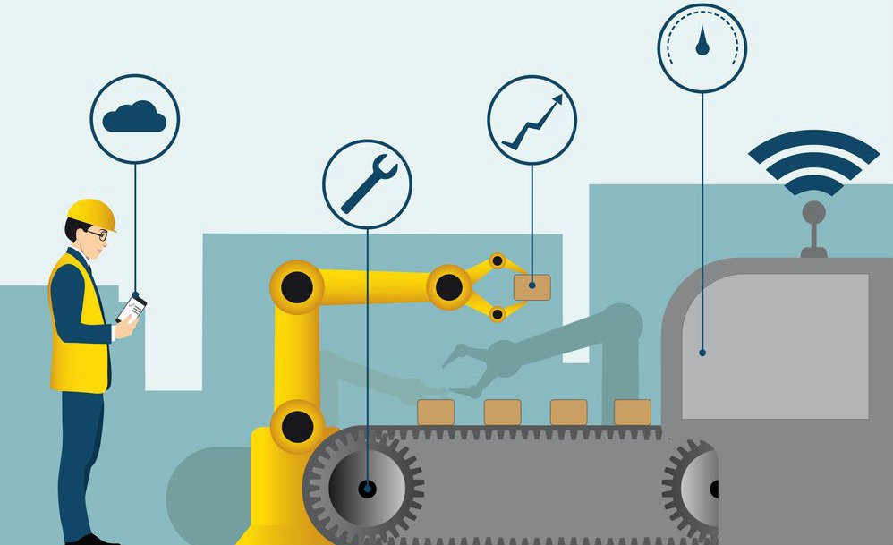
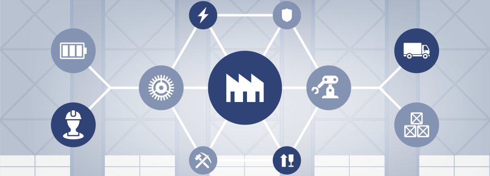
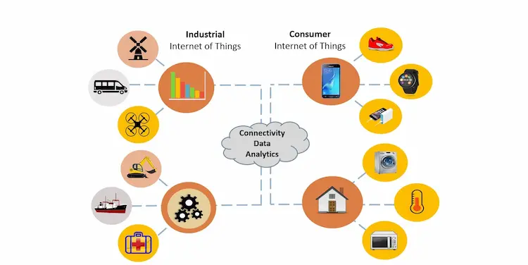
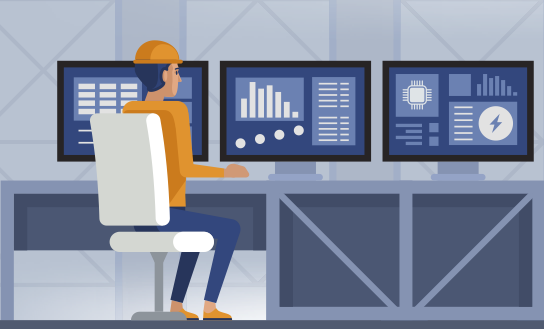
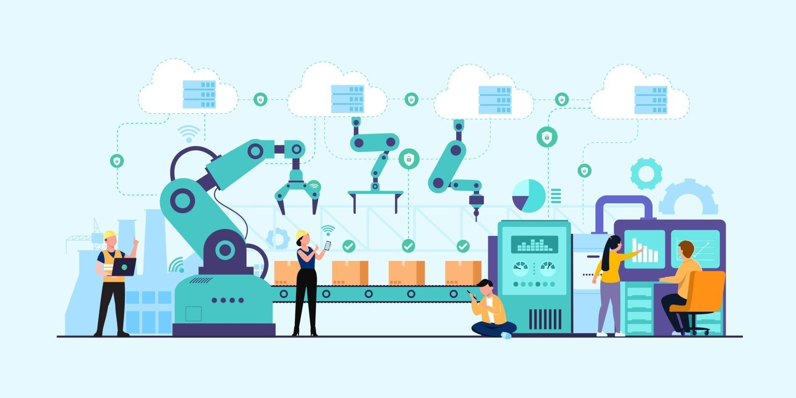
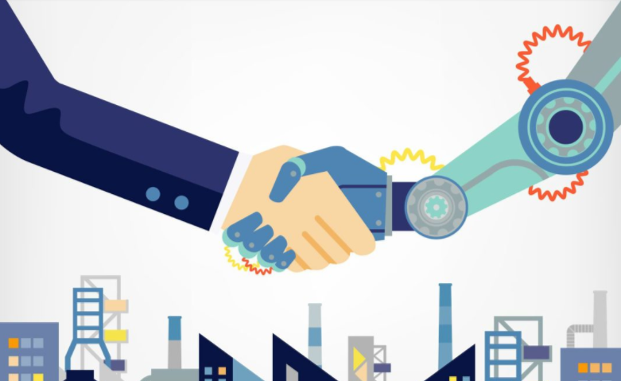
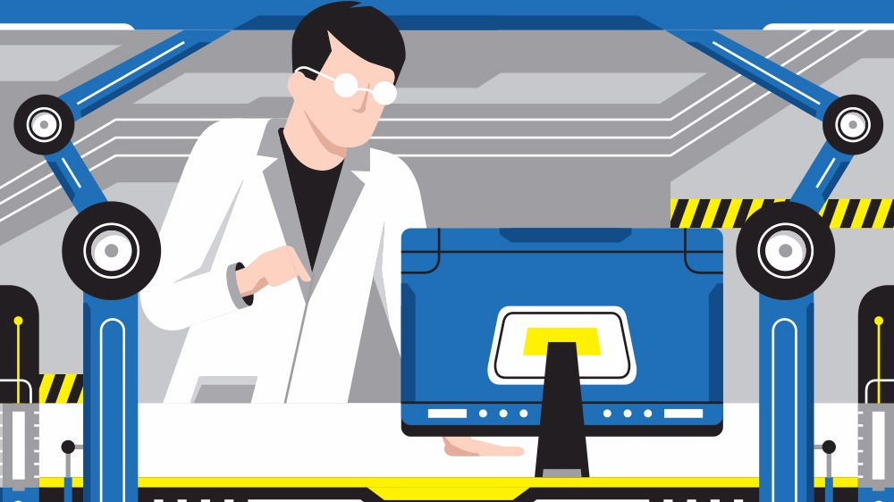

IoT na Industria
O IoT Industrial (IIoT – IoT industrial) reúne máquinas, computação em nuvem, estudo analítico e pessoas para melhorar a performance e a produtividade dos processos industriais. Com o IIoT, as indústrias podem digitalizar processos, transformar modelos de negócios e melhorar a performance e a produtividade, reduzindo o desperdício simultaneamente. Essas empresas que usam muitos ativos e operam em uma faixa de setores como manufatura, energia, agricultura, transporte e serviços públicos estão trabalhando em projetos de IoT que conetam bilhões de dispositivos e geram valor em vários casos de uso, incluindo o estudo analítico preditivo de qualidade e manutenção, o monitoramento da condição de ativos e a otimização de processos.
Uma instalação industrial típica tem milhares de sensores que geram dados. Com o IIoT, os fabricantes, por exemplo, podem combinar dados de máquinas de uma única linha, fábrica ou de uma rede de locais, como unidades de manufatura, instalações de montagem e refinarias, para melhorar proativamente a performance identificando possíveis gargalos, falhas, lacunas nos processos de produção e problemas de qualidade antes que aconteçam. Combinar dados de uma rede de locais também pode resultar em um controle mais eficiente do fluxo de material, na detecção, identificação e eliminação precoces de gargalos na produção ou no suprimento, e na operação otimizada de maquinário e equipamentos em todas as instalações.
Casos de uso de IoT Industrial
Qualidade preditiva
As análises de qualidade preditiva extraem insights práticos de fontes de dados industriais, como equipamentos de fabricação, condições ambientais e observações humanas para otimizar a qualidade da produção da fábrica. Usando o AWS IoT, os fabricantes industriais podem criar modelos de qualidade preditiva que ajudam a criar produtos melhores. Produtos de maior qualidade aumentam a satisfação do cliente e reduzem os recalls de produtos.

Monitoramento das condições de ativos
O monitoramento das condições de ativos captura o estado das máquinas e equipamentos para determinar a performance dos ativos. Com o AWS IoT, você pode capturar todos os dados de IoT, como temperatura, vibração e códigos de erro, que indicam se a performance do equipamento é a ideal. Com maior visibilidade, você pode maximizar a utilização de ativos e o investimento neles.
Manutenção preditiva
Os estudos analíticos de manutenção preditiva capturam o estado dos equipamentos industriais para identificar possíveis falhas antes que elas afetem a produção. O resultado é o aumento da vida útil dos equipamentos, da segurança de operadores e da otimização da cadeia de suprimentos. Com o AWS IoT, você pode monitorar e inferir continuamente o status, a integridade e a performance dos equipamentos para detectar problemas em tempo real.
Diferenças entre IoT e IIoT
A Internet das Coisas Industrial é uma subcategoria da Internet das Coisas, que também inclui aplicativos voltados para o cliente, como dispositivos usáveis, tecnologia para casas inteligentes e carros autônomos. Dispositivos, máquinas e infraestrutura com sensores integrados que transmitem dados via internet e que são gerenciados por software são a marca de ambos os conceitos.
A IoT é aplicada principalmente para uso por consumidores, tornando suas vidas muito mais fáceis. Por outro lado, IIoT é usado em indústrias para maximizar sua segurança e viabilidade. O IoT e o IIoT não são equipamentos nem sensores, mas é um ecossistema baseado na comunicação. Esses sistemas têm vários dispositivos, como sensores industriais, máquinas fotográficas, reféns do produto, e taxas de vendas para vincular a processos baseados em nuvem.
Os resultados obtidos pelos sistemas IoT ou IIoT são mostrados na tela do computador ou smartphone. Eles são usados para melhorar as operações em processos industriais, trazendo assim benefícios financeiros e operacionais únicos. Alguns dos exemplos de ecossistema IoT / IIoT incluem; aplicativos como aparelhos domésticos e operações remotas de dispositivos médicos. Ao comprar um IoT / IIoT, é fundamental verificar a disponibilidade do produto, cuidados com configurações técnicas estranhas, separação, e muitos mais.
Benefícios
A IIoT está mudando as indústrias e está gerando níveis sem precedentes de produtividade, eficiência e desempenho que permitem aos fabricantes obter benefícios financeiros e operacionais transformacionais.
Aumento no nível de segurança
A segurança no local de trabalho é essencial para alcançar uma operação ideal, evitando interrupções substanciais na produção e, o mais importante, protegendo os funcionários.
Muitos processos contam com métodos desatualizados de coleta de dados de segurança, alguns usando relatórios de caneta e papel, e outros até sem relatórios. Isso pode resultar em escorregões nos padrões de segurança, atrasos no relato de dados e até mesmo no gerenciamento de nível sênior, que são responsáveis por mitigar esses riscos, recebendo dados parciais sobre violações de segurança.
Com o IIoT, você obtém visibilidade do seu equipamento, permitindo a visualização de indicadores-chave não apenas na produção, mas também na conformidade com a segurança. Isso, por sua vez, permite que você seja proativo ao detectar possíveis falhas de segurança em seu processo.
Melhoria na eficiência energética
Uma das maiores despesas para organizações de manufatura é a conta de energia. A IIoT pode capacitar e transformar líderes de manufatura para determinar quando e onde eles estão desperdiçando energia e consertando essas áreas.
Os dados em tempo real fornecem insights como o consumo fora de hora e outras oportunidades de economia de energia que permitem aos gerentes identificar ineficiências e desperdícios operacionais.
As informações sobre como obter maior eficiência de equipamentos / máquinas, possíveis problemas de conformidade normativa e desperdício que oferecem oportunidades de economia de custos são fornecidas e os líderes podem tomar medidas mais cedo ou mais tarde.
Manutenção preditiva
Um dos principais valores agregados da IIoT para a linha de manufatura até o momento foi a manutenção preditiva. O objetivo é, primeiro, prever quando uma falha de máquina ou equipamento pode ocorrer — e então evitar que essa ocorrência aconteça executando a manutenção.
Em um cenário ideal, a manutenção preditiva permite que a frequência de manutenção seja a mais baixa possível e evita a manutenção reativa não planejada, criando um cronograma de manutenção mais proativo. Isso traz várias economias de custo, como a redução das horas de produção perdidas para a manutenção, minimizando o custo de peças de reposição e suprimentos e o tempo necessário para manter máquinas e equipamentos.
Tomada de decisão rápida e mais informada
Com a IIoT, os gerentes de operações não estão mais desinformados sobre o desempenho ou problemas da máquina / equipamento. Assim como a manutenção preditiva, isso transforma a abordagem de um gerente de uma abordagem reativa a uma proativa, em que o desperdício é reduzido com um aumento na visibilidade geral. O poder está na precisão dos dados que eles têm - e na capacidade de agir com base em insights dos dados.
Maior qualidade do produto, tempo de inatividade reduzido e uma vantagem competitiva em tempo real é o que os fabricantes do futuro estão alcançando com a internet das coisas industrial. A fábrica do futuro pretende ser ainda mais eficiente, operar com maior rentabilidade e alcançar maior satisfação do cliente. Todos os benefícios acima fazem da IIoT uma ferramenta crítica e poderosa para as organizações de manufatura que desejam crescer e prosperar no futuro digital.
futuro da IoT e da IIoT
Ao longo dos próximos anos, a adoção das tecnologias IoT e IIoT continuará a crescer. Estima-se que o mundo terá 25 bilhões de dispositivos conectados até 2021. De maneira global, estima-se que o mercado de IIoT cresça para US$ 771,72 bilhões até 2026.
Essas tecnologias já estão impactando vários setores, desde os setores de produtos de consumo até os de fabricação e assistência médica. Elas continuarão a fomentar a transformação digital e alterar bastante praticamente todos os setores, em conjunto com outras tecnologias do Industry 4.0. Quando usadas com a automação, a análise de dados, a inteligência artificial e outras tecnologias avançadas, a IoT e a IIoT podem ser ainda mais impactantes.
Atualmente, a IoT e a IIoT proporcionam às empresas uma vantagem competitiva diante da concorrência. Elas precisam usar cada vez mais essas tecnologias para não ficarem atrás de seus concorrentes, e a importância dessas tecnologias para as empresas continuará a crescer nos próximos anos. Elas também se tornarão cada vez mais presentes no dia a dia dos consumidores. À medida que o futuro se torna mais conectado, inteligente e digitalizado, a IoT e a IIoT passam a desempenhar um papel cada vez maior nas nossas vidas profissionais e pessoais..